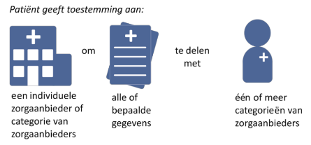

RIVO-Noord Zorgviewer Implementation Guide - Local Development build (v1.6.0) built by the FHIR (HL7® FHIR® Standard) Build Tools. See the Directory of published versions
Conformance
Uitgangspunten
- De architectuur moet generiek zijn en voor verschillende zorgpaden en specialismen toepasbaar zijn.
- Alle actoren in het zorgpad hebben inzage in dezelfde informatie, op basis van de gegeven toestemming van de patiënt.
- Informatie blijft primair bij de bron en wordt zo min mogelijk gerepliceerd
- Registratie aan de Bron - zorg voor juiste bron registratie, ontsluit wat er is
- Aanpassen aan de bron, mappings in de bron en bron corrigeren als mogelijk
- De Zorgviewer wordt opgestart vanuit de eigen informatieomgeving
- TOEKOMST Informatie kan worden overgenomen in het eigen informatiesysteem wanneer daaraan behoefte is
- De informatie wordt gefilterd op basis van de specifieke informatiebehoefte, bijvoorbeeld:
- actief zorgpad
- alle zorgepisodes van de afgelopen 2 jaar
- alle benodigde informatie voor een gedefinieerd specifiek zorgpad
- alle labuitslagen van de afgelopen 4 maanden
- De architectuur gaat uit van een haalbare eerste versie vanuit bestaande werkwijzen en technische mogelijkheden.
- De architectuur voldoet aan wet- en regelgeving en maakt compliancy op het gebied van privacy en security mogelijk.
- De architectuur rust op de verleende toestemming door de patiënt. De patiënt bepaalt of gegevens worden gedeeld, en heeft inzicht in wie de gegevens raadpleegt of overneemt.
- De architectuur is gebaseerd op open standaarden
- Taal en transport zijn gescheiden, zodat vendor-lock-in wordt voorkomen
- Internet-first transport - geen besloten netwerken
Requirements
Zorgviewer Host
Synoniemen:
- Hostsysteem
- Informatieomgeving
Definitie: Informatieomgeving (EPD, ECD, Portal) van de gebruiker van waaruit de Zorgviewer opstart wordt.
Requirements:
- De zorgviewer host draagt zorg voor (lokale) authenticatie van de gebruiker.
- De zorgviewer host voorziet in patient selectie en toets behandelrelatie.
- De zorgviewer host kan de zorgviewer opstarten met context (huidige gebruiker en patient).
- De zorgviewer host ondersteunt patient context wissels.
- De zorgviewer host ondersteunt gebruiker context wissels.
- De zorgviewer host biedt mogelijkheid aan de zorgviewer om huidige gebruiker en patiënt details (zoals naam) op te vragen als dit mist in de context.
Keuze:
- Conform SMART-on-FHIR 1.0.0 EHR launch
Solutions:
- Epic Hyperspace
- Chipsoft HiX
- Topicus VIPlive
- TOEKOMST Zorgviewer Launcher - Los voor gebruikers zonder EPD/ECD
Zorgviewer
Definitie: De Zorgviewer toont data uit de aangesloten bronsystemen, ordent deze, en biedt de gebruiker de mogelijkheid van filtering van de data op basis van het zorgpad of persoonlijke instellingen.
Requirements:
- De zorgviewer bevat zelf geen patiëntgebonden data, en wijzigt geen data in de bronsystemen.
- De zorgviewer integreert in de informatieomgeving van de gebruiker.
- Keuze: Conform SMART-on-FHIR 1.0.0 EHR launch
- Het moet mogelijk zijn om aan te geven dat het een spoedsituatie betreft.
- Conflicten, ontdubbelen en duplicaatdetectie volgens BgZ MSZ Informatiestandaard
- De zorgviewer attendeert de gebruiker op belangrijke lacunes in het eigen informatiesysteem: specificeren wat en welke dat zijn. Centraal vastleggen en dat alerten.
- De zorgviewer attendeert de gebruiker op conflicten in het tonen van data van verschillende bronnen waar ze niet overeenkomen.
- De zorgviewer faciliteert in ontdubbelen
- De zorgviewer logt gebruikersacties (clicks). Dit ten behoeve van optimalisatie gebruikersinterface en trends van gebruik.
- De zorgviewer biedt de mogelijkheid om informatie te tonen op basis van de plek van de patiënt in het zorgpad.
- De zorgviewer biedt de mogelijkheid om persoonlijke filters toe te passen.
Toestemming
Definitie: De expliciete specifieke, vrijgegeven toestemming tot het beschikbaar stellen van zorginformatie door de patiënt (bron: AVG)

Bron: MITZ Toestemming Documentatie
Kandidaat solutions:
- INITIEEL: Regionale service
- Invulling: FHIR server met vulling volgens FHIR API van MITZ "Open autorisatievraag"
- Connect4Care Topicus
- MITZ OTV TOEKOMST
Identiteit
Definitie: Identiteit wordt gebruikt voor:
- Vastleggen van logging
- Bepalen van gerechtigde dataset
- Basis voor authenticatie
Requirements:
- Gebruik van reeds in organisatie in gebruik zijnde ID’s gekoppeld aan een extern erkende identiteit, zoals AGB of BIG voor zorgverleners en zorgaanbieders.
- Lokale identiteit MOET AGB-Z of BIG-Nummer als attribuut hebben, zodat we via de Zorgverlener Directory de specialismen en rollen kunnen opvragen
- Vektis AGB-medische specialismen
Zorgverlener Directory
Synoniemem:
- Zorgverlener Registry
- Zorgaanbieder Registry of Directory
- Provider Directory (IHE)
- Adressering
- White pages
Definitie: Register met Identiteiten en attributen van zorgaanbieders en zorgverleners. Voorbeelden zijn volledige naam, maar ook technische endpoints.
Volledige naam: "F. Heuvel (Cardiologie (cardioloog)) in het UMCG"
FHIR Base voor UMCG: https://prd.epic.umcg.nl/fhir/STU3
Kandidaat solutions:
- Regionale FHIR server met vulling volgens FHIR API van ZORG-AB
- ZORG-AB Implementatiehandeleiding
- FHIR Interface definitie ZORG-AB: Simplifier Project
- ONDERZOCHT: Het BIG-Register - Handleiding webservice BIG-register - deze biedt geen FHIR interface, bovendien zit de content ook in het ZORG-AB.
Authenticatie
Definitie: Het bouwblok authenticatie stelt de identiteit van de gebruiker onomstotelijk vast volgens de wettelijke kaders. Is onderdeel van de Zorgviewer Host.
Requirements:
- ..
Keuze:
- Compliant met SMART-on-FHIR 1.0.0
Invulling Epic:
- Zorgviewer Epic OAuth2
- Ontsluiting bronsysteem Epic Backend Authentication
Autorisatie
Definitie: Rechten die een identiteit (zorgverlener, cliënt / patiënt) heeft voor toegang tot cliëntgegevens (bron: NEN 7510).
Er zijn meerdere niveau's van autorisatie, namelijk:
- De zorgviewer moet geautoriseerd zijn om bronsysteem ontsluitingen te bevragen (technisch: welke FHIR resources in scope en clientID)
- De gebruiker moet geautoriseerd zijn om de zorgviewer te gebruiken
- De gebruiker moet geautoriseerd zijn om specifieke gegevens op te vragen aan de hand van toestemming en rol
Logging
Definitie: Stelselmatige geautomatiseerde registratie van gegevens rond de toegang tot het patiëntdossier, die controle van de rechtmatigheid ervan mogelijk maakt (NEN 7513).
Requirements:
- Bij opvragen van gegevens dient een gebruikersnaam en extern id mee gestuurd te worden door de aanroepende instelling zodat dit bij het bronsysteem kan worden gelogd.
- Logging dient te gebeuren in het bronsysteem.
- Logging dient te gebeuren op inzage van de gegevens.
- De Zorgviewer logt voor audit log naar een regionale log service.
- Logging volgens NEN 7513 en IHE ATNA
Solutions:
- Regionale FHIR Server met AuditEvents conform NEN 7513 gevuld.
Ontsluiting bronsysteem
Definitie: Het bouwblok ‘Ontsluiting bronsystemen’ draagt zorg voor het aanleveren van de informatie uit de bronsystemen in een formaat dat door de zorgviewer kan worden verwerkt (Zibs/FHIR).
Requirements:
- Ontsluit minimaal de volgende gegevens:
- de 28 BgZ-Zibs
- de correspondentie (radiologie brieven, specialisten brieven, notities, ontslag brief)
- N.B. de zibs kunnen heel veel gegevens ondersteunen, maar als er geen schermen voor zijn om de gegevens in te voeren of geen workflow is waar die schermen zichtbaar worden, zullen die gegevens nooit beschikbaar zijn.
- Zorginformatiebouwstenen conform NICTIZ publicatie 2017, de 28 BgZ-Zibs,
Zibs 2017 FHIR Profiles en BgZ 2017 obv HL7 FHIR STU3
- Individuele zibs moeten kunnen worden aangeleverd
- Alleen identiteiten zoals gedefinieerd door het Identiteit bouwblok mogen geaccepteerd worden.
- TOEKOMST Bronsysteem ZOU MOETEN checken bij Mitz
Kandidaat solutions:
Behandelplan
Definitie: De stappen die je als patiënt of cliënt kan doorlopen in het zorgpad. In de zorgviewer zie je een digitale weergave van het -regionaal of per specialisme overeengekomen- zorgpad. Aan de gestructureerde stappen 'hangen' informatiecomponenten (de zibs of codes) vast, waarmee de relevante gegevens hoger getoond kunnen worden.
Requirements:
- ..
Solutions:
- FHIR server met PlanDefinitions, focus op data-requirements tbv queries en filters
Technische Requirements
- Alle implementaties dienen zich te houden aan Postel's law, Robustness principle Grahame Grieve of Mark Kramer
- Niet valideren tegen de profiles at-runtime, alleen bij aansluit (zelf) certificeren aan de hand van de CapabilityStatements in deze implementatiegids.
EHR-S FM Requirements Mapping
Het HL7 EHR System Functional Model is een referentie lijst van functies die mogelijk in een EPD Systeem (EHR-S) beschikbaar zijn.